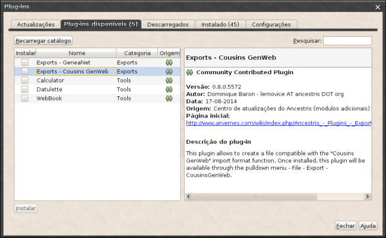

Generalidades sobre extensões
As "Extensões" (módulos, plugins, suplementos ou complementos) são programas
não autónomos, que se "casam" com o programa principal
do Ancestris para lhe dar mais funcionalidades.
Extensões instaladas e extensões disponíveis
Encontram-se em : "Ferramentas -> Extensões". O algarismo
entre parentêses dos 2º e 4º separadores
indica o número de extensões.
Para cada extensão, a área da
direita dá-lhe informações específicas.
Transferência e instalação
Bastam alguns cliques para instalar uma extensão (ou várias),
a partir do separador "Extensões disponíveis (x)".

- Clique em Recarregar catálogo para obter uma
atualização da lista proposta.
Para evitar esta etapa : no separador
"Configurações", na zona inferior "Procurar
automaticamente por atualizações -> Intervalo de verificação",
escolha "Sempre que iniciar".
- Instalação:
- marque as caixas das extensões que deseja. O
botão "Instalar" torna-se ativo;
- clique nesse botão e a janela "Instalador de extensões"
abre-se, com um resumo das extensões eventualmente
escolhidas;
- confirme a sua intenção clicando em "Seguinte". Surge
uma janela com as condições legais
de utilização da extensão. Para prosseguir com a instalação,
deve aceitar as condições de todas as licenças
associadas às extensões selecionadas;
- marque a caixa, em baixo à esquerda, "Aceito todos
os termos do contrato de licença". O botão "Instalar",
torna-se ativo.
- clique nesse botão. A extensão é
transferida. Abre-se uma janela
"Aviso de validação", que o informa da
assinatura (ou não) da extensão. Esteja ou não presente
esta assinatura, não corre riscos, esta extensão vem de
certeza da página oficial do Ancestris.
- Clique em "Continuar".
A instalação terminou. Nalguns casos, será
necessário reiniciar o programa antes de
poder utilizar a nova extensão.
Desinstalar uma extensão
Volte a "Ferramentas -> Extensões" para abrir, desta vez,
o separador "Instaladas (x)".
- marque a caixa em frente da extensão que quer
desinstalar. O botão "Desinstalar" torna-se
ativo;
- clique em "Desinstalar". A janela
"Instalador de extensões" abre-se, resumindo as
extensões associadas que quer desinstalar;
- confirme a sua escolha.
Após a desinstalação, terá a escolha de reiniciar
o Ancestris "imediatamente" (solução preferível)
ou "mais tarde". Feita a escolha, clique em "Terminar".
Não hesite em testar as extensões, a desinstalação
é fácil, completa e rápida.
Provavelmente não as vai desinstalar.
Estas explicações existem sob a forma de um
vídeo
disponível na Wiki do Ancestris.
Atenção, atualmente, se abrir esta ligação na página
de ajuda, a definição não é a melhor. É preferível
copiar a ligação (clique direito) e abri-la no seu navegador da Internet.